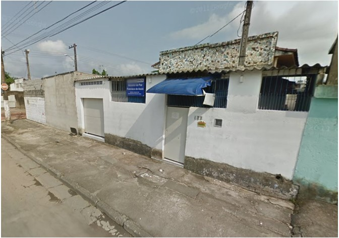
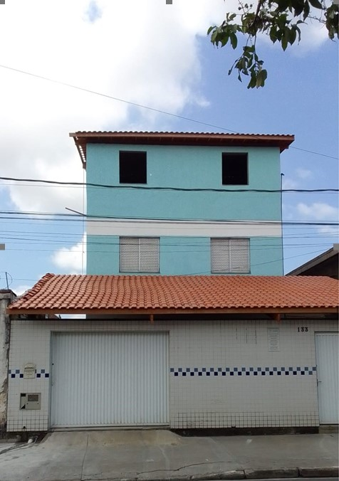

Portanto, toda organização institucional que vise o aprimoramento evolutivo da Humanidade, antes de se realizar na Terra, é planejada nas esferas mais altas.
E nós, trabalhadores do REPAZ, reunidos para servir a propósitos cristãos, temos certeza disso. Um raio de boa vontade nossa, de trabalho, amor e perseverança - é tudo o que a espiritualidade necessita para derramar suas bênçãos de auxílio aos que buscam consolo, esclarecimento e assistência.
No início, o Sr. Arnaldo Pereira (nosso fundador) recolhia doações de pães nas padarias de Santos e entregava às pessoas que se aglomeravam na porta de sua casa, no bairro Jardim São Manoel
Em 2004 , uma equipe de trabalhadores provenientes do Centro Espírita "Ismênia de Jesus", se juntou a essa causa, quando foi decidido transferir a atividade para um local perto da Sociedade de Melhoramentos do Bairro - a casa da Renilda, onde, antes da distribuição dos pães, era realizada uma pequena Palestra Espírita. Começava, aí, a distribuição do "pão espiritual".
Nesse mesmo ano, resolveram alugar um espaço maior, que comportasse o número de pessoas atendidas. O prédio alugado, tratava-se do imóvel onde funcionou o primeiro comércio do bairro.
Em 2005, o Sr. Salvador, proprietário do imóvel, juntamente com seu filho Manoel Messias, começou a participar das atividades da Casa; e, reconhecendo a seriedade e importância do trabalho realizado para a comunidade, em 2008, antes de seu desencarne, doou a propriedade para o REPAZ.

Nessa época, além da distribuição dos pães, entregava-se marmitas doadas pelas detentas do Sistema Prisional de Santos; também frutas, verduras e legumes doados pelo sacolão da Av Afonso Pena e pelos feirantes; bem como, pacotinhos de leite em pó para as crianças de até 4 anos de idade (distribuição esta ainda realizada).
Era utilizada uma Kombi alugada para coletar as doações e, posteriormente, o Sr. José Roberto, da equipe de fundadores, disponibilizou seu caminhão de trabalho, na medida do possível. Para atender às necessidades de arrecadação, hoje, o REPAZ já tem veículo próprio doado.
Os recursos para as despesas da Casa eram obtidos através Eventos; também, através da venda de móveis e eletrodomésticos doados (com valores bem acessível, muitas vezes nem cobrados) e, através do Bazar Popular realizado (até hoje) com as doações recebidas de roupas, calçados, acessórios e utensílios.
No dia 05/10/2013, o REPAZ inaugurou sua nova sede predial, no mesmo endereço, obra essa realizada com os recursos de nosso companheiro e trabalhador Espírita - Márcio - que, inspirado pela espiritualidade, além de reconstruir totalmente o imóvel e ampliar as dependências, trouxe um propósito renovador para o REPAZ - promover a dignidade das pessoas através de Aulas de qualificação e Cursos Profissionalizantes - totalmente gratuitos e ministrados por professores voluntários. E isso já é uma realidade!
